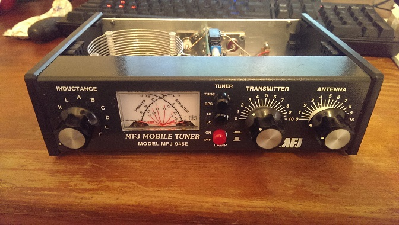
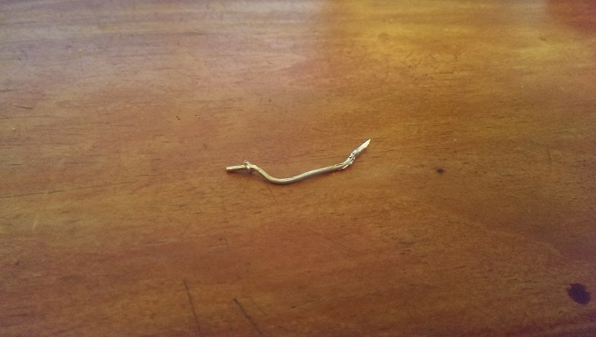
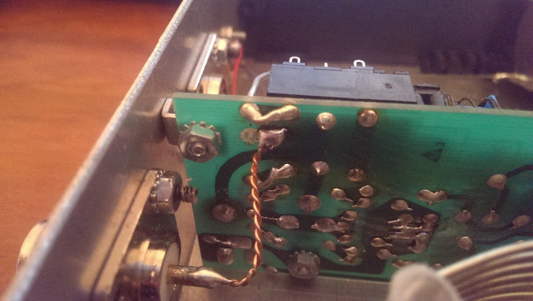
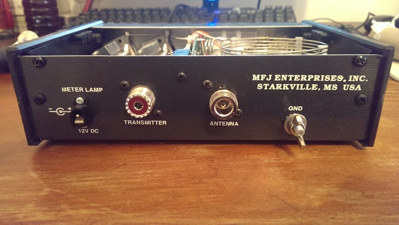

I purchased this tuner a while back because it was cheap, it has served me well for a good long while. I noticed that I was occasionally getting crackling and silence, I figured something must have come undone inside as I use this tuner outside a fair bit and it gets moved around, I had a peak inside and sure enough the output terminals PCB track had lifted off the circuit board.
Here is a picture of the tuner in question :
Here is a picture of the wire which connected the circuit board to the "Antenna" terminal on the back of the tuner, note the part of the PCB track that has lifted off :
What I decided to do is since I mostly use N connectors for my coaxial cables was to replace the UHF reciptacle on the back of the tuner with an N connector, I started by removing some of the coating near where the PCB track had lifted off the circuit board and soldered on a twisted copper wire, I soldered the other side into the replaced N connector. The wire was originally just one strand but I thought it better to twist two together for better handling of higher power levels. Here is a picture of the connection to the new N connector:
The tuner is now working nicely, no more crackling or sudden drops in signal. I will eventually change the tranciever connector reciptacle to N style too but currently all my patch cables have UHF connectors.
Here is a picture of the rear of the tuner with the N connector for the tuner output :
-pork9000 19/02/2014
Back to index